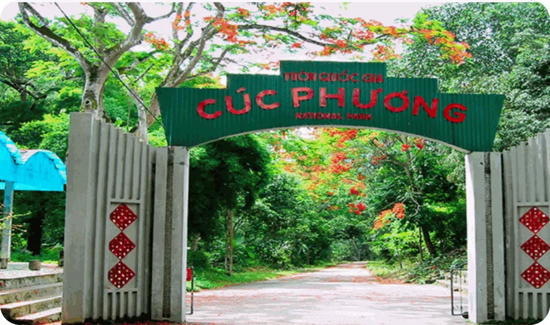
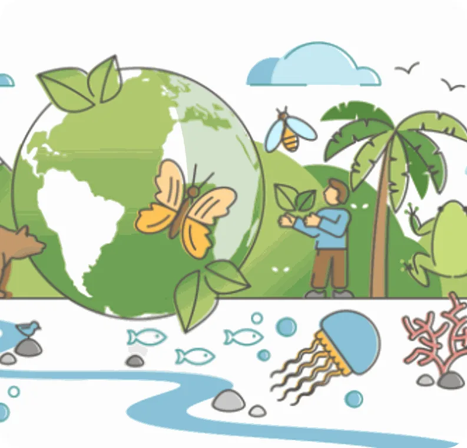
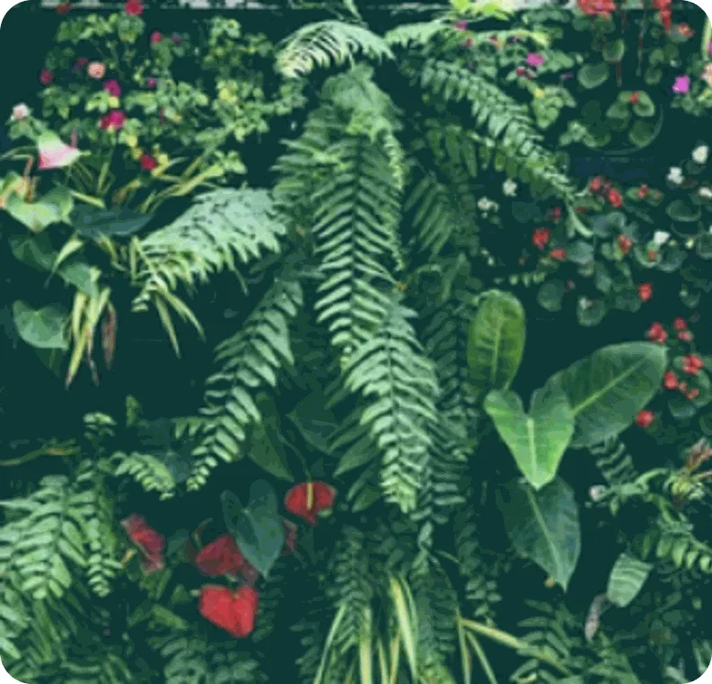
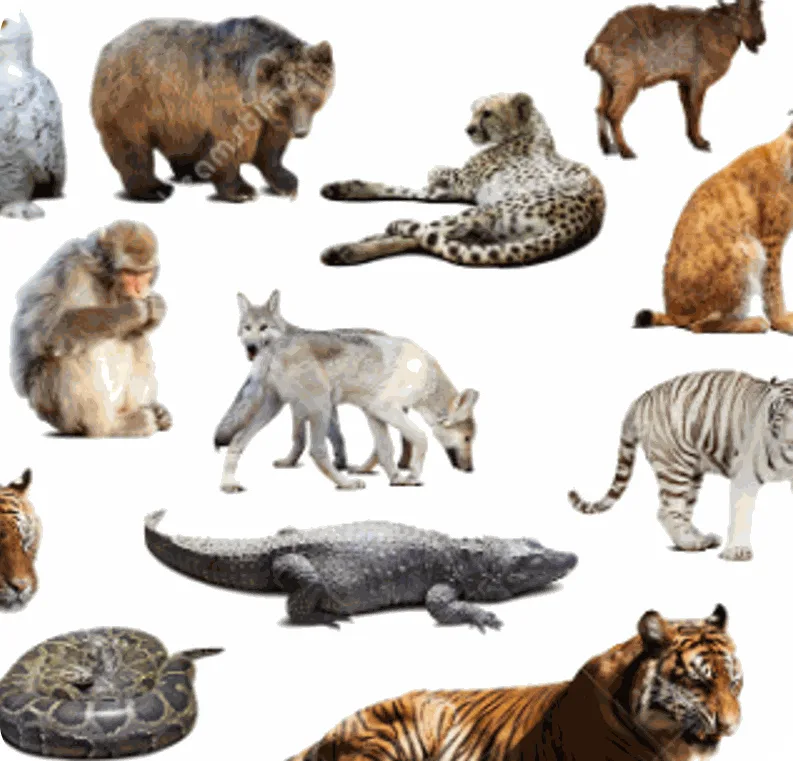
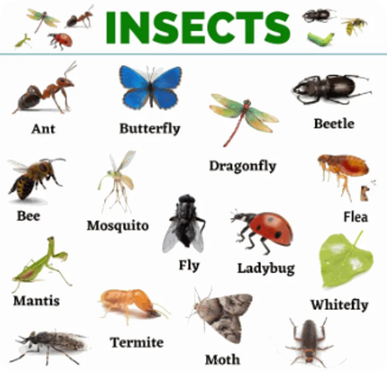
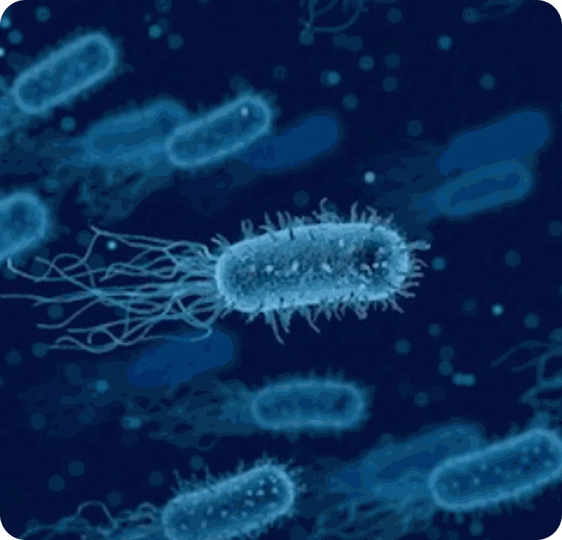
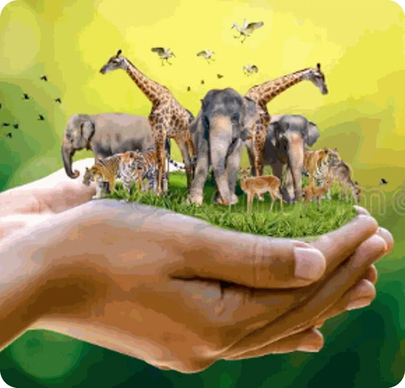

Ecosystems and humans
Lesson 1 — Getting started
10Five stops in 45 minutes
- 🔎
Warm-up
Guess the place
5 min - 🔤
Vocabulary
Words from the wild
7 min - 🎧
Listen and read
Ms Hoa, Nam and Mai · Tasks 1–4
20 min - 🎭
Role-play
Ask the expert
10 min - ✅
Wrap-up
Exit ticket
3 min
Warm-up
Guess the place
5 minutesWhere in Viet Nam?
Clue 1. This landscape forms the habitat for some of Asia’s rarest animal and plant species. 3 points if you guess now!
Clue 2. Visitors in April and May have the chance to see thousands of vibrant butterflies. 2 points if you guess now!
Clue 3. This place is located 120 km southwest of Ha Noi, between the provinces of Ninh Binh, Thanh Hoa and Hoa Binh. 1 point if you guess now!
Cuc Phuong National Park

What kinds of plants or animals might live here? ancient trees, butterflies, birds, monkeys, …
How can visitors help protect the park? don’t litter · stay on the paths · don’t pick plants or feed animals
Vocabulary
Words from the wild
7 minutes





Listen and read
Ecosystems and humans
20 minutesEcosystems and humans
Ms Hoa: Nam, you went to Cuc Phuong National Park last weekend, didn’t you?
Nam: Yes, that’s right. It was an amazing trip. This old forest is home to thousands of different kinds of plants, insects, and animals. I really liked the colourful butterflies and the thousand-year-old tree.
Ms Hoa: Yes, Cuc Phuong National Park has a very rich ecosystem.
Ecosystems and humans
Mai: What’s an ecosystem, Ms Hoa?
Ms Hoa: It’s a community that has living things, like flora and fauna. Flora refers to plants and fauna refers to animals, including tiny organisms, like bacteria. Ecosystems also include non-living things, like sunlight, air, soil, and water.
Nam: How important are ecosystems to life on our planet, Ms Hoa?
Ecosystems and humans
Ms Hoa: Healthy ecosystems are essential for human health and survival because they provide us with goods such as food, energy, raw materials, clean water, and air.
Mai: So we should protect our ecosystems, shouldn’t we?
Ms Hoa: That’s right. Unfortunately, many ecosystems around the world are being lost, damaged, or destroyed because of climate change, pollution, and overuse of natural resources. It’s very important to protect and restore them for future generations. We don’t want our planet to lose even more biodiversity, do we?
True or false?
- Nam went to Cuc Phuong National Park two weeks ago. FALSE He went there last weekend.
- In an ecosystem, plants, animals, and other living and non-living things form a community. TRUE
- We are losing a large number of ecosystems around the world. TRUE
Ecosystem
🌿 (1) ________ Living things
• Plants or (2) ________ flora
• Animals or (3) ________ fauna
• Tiny organisms such as (4) ________ bacteria
☀️ (5) ________ Non-living things
• Sunlight, soil, air, water, etc.
Compound nouns
- raw
- climate
- change
- resources
- park
- natural
- national
- materials
1. a change in the earth’s weather conditions climate change
2. things that exist in nature and can be used by people natural resources
3. land protected by the government because of its natural beauty or special history national park
4. basic materials used to make products raw materials
Role-play
Ask the expert
10 minutesEcosystem press conference
- ❓
What is an ecosystem?
An ecosystem is a community that has …
- 🌿
Living and non-living parts?
Living things include … · Non-living things include …
- 🛡️
Why should we protect it?
Healthy ecosystems provide us with … · We don’t want to lose …
Before you leave…
1. What does flora refer to? And fauna? flora — plants · fauna — animals
2. Name two non-living things in an ecosystem. sunlight · air · soil · water
3. Why are ecosystems being lost? climate change · pollution · overuse of natural resources
Homework
1. Do the Getting started exercises in the workbook.
2. Find one ecosystem near your home and list its living and non-living things.
3. Prepare for Lesson 2 — Language: question tags, compound nouns.